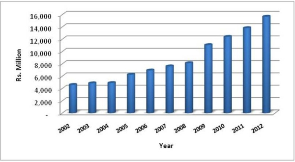
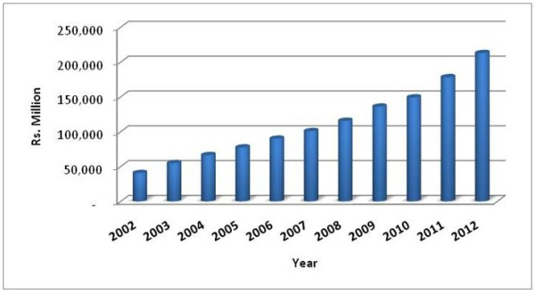
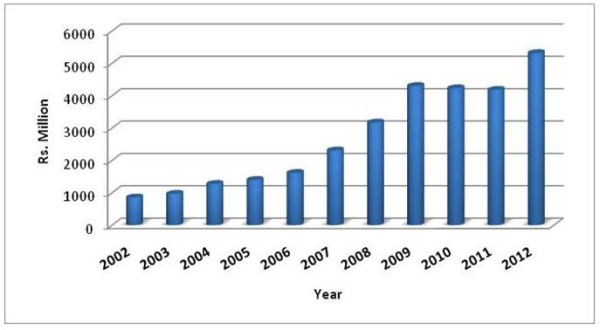
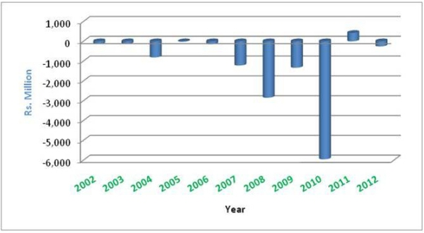

")


Board Act
| National Water Supply and Drainage Board Law, No. 2 of 1974 | [ PDF - 237 KB ] | [ ZIP - 189 KB ] |
| National Water Supply and Drainage Board (Amendment) Act, No. 13 of 1992 | [ PDF - 163 KB ] | [ ZIP - 148 KB ] |
ප්රතිපත්ති
ජල පිරියම් යන්ත්රාගාර සඳහා රොන් බොර කළමනාකරණය
- ක්රියාවලී ගැලුම් සටහන - රොන් බොර කළමනාකරණ ප්රතිපත්තිය
[ PDF - 118 KB ] - ජල පිරියම් යන්ත්රාගාර සඳහා රොන්බොර
කළමනාකරණය
[ PDF - 293 KB ]
වැසි ජලය එක්රැස් කිරීමේ ජාතික ප්රතිපත්තිය සහ උපාය මාර්ග
බැලීම සඳහා මෙතැන ක්ලික් කරන්න
ග්රාමීය ජල සම්පාදන සහ සනීපාරක්ෂක අංශය සඳහා ජාතික ප්රතිපත්තිය – ජූලි 2001
පානීය ජලය පිළිබඳ ජාතික ප්රතිපත්තිය
ජල සම්පාදන සහ සනීපාරක්ෂාව පිළිබඳ ජාතික ප්රතිපත්තිය - 2002 අගෝස්තු
ශ්රී ලංකාවේ ආර්ථික සහ සමාජීය සංවර්ධනය සඳහා වන රජයේ වැඩසටහනෙහි අත්යවශ්ය හෝ මූලික අංගයක් වනුයේ ආරක්ෂිත පානීය ජලය සහ සනීපාරක්ෂක සේවා වෙත ප්රවේශය සැපයීමයි. ආවරණ මට්ටම් සහ සේවා ගුණාත්මක බව පසුගිය දශකය පුරා කැපී පෙනෙන සේ ඉහළ ගියද ජල සේවා සඳහා ඇති අවශ්යතාව ප්රමාණවත් ජලය සහ සනීපාරක්ෂාව (නල මාර්ග මලාපවහන කාණු පද්ධති යටිතල පහසුකම් ඇතුළුව) සැපයීමට සහ රටපුරා පුරවැසියන්ට සමාන ප්රවේශයක් සහතික කිරීමට රජයට ඇති හැකියාව ඉක්මවා ගොස් තිබේ. එබැවින් මෙම අංශයේ ප්රතිසංස්කරණ සිදුකිරීමට ශ්රී ලංකා රජය වැඩසටහනක් ආරම්භ කර තිබේ. මෙම ප්රතිසංස්කරණ ක්රියාවලියේ කොටසක් ලෙස දැනට ගනිමින් පවතින ප්රධාන පියවර අතරට ජල සැපයුම සහ සනීපාරක්ෂක පද්ධති සඳහා නියාමන කොමිසමක් ස්ථාපිත කිරීම සහ මෙහෙයුම් කාර්යක්ෂමතාව වැඩි දියුණු කිරීම පිණිස දිවයිනේ තෝරාගත් ප්රදේශවල පුද්ගලික මෙහෙයුම්කරුවන්ට කොන්ත්රාත් බාරදීම සහ පුද්ගලික අංශයේ මූල්යය ආයෝජන සැපයිම අයත් වේ. තවද, ග්රාමීය ජල සම්පාදන සහ සනීපාරක්ෂා උප අංශය සඳහා රජය රේඛීය අමාත්යාංශය යටතේ වෙනම අංශයක් ස්ථාපිත කර තිබේ.
ජල සම්පාදන හා සනීපාරක්ෂක අංශයේ වර්ධනයට මග පෙන්වීම පිණිස වතු නිවාස සහ යටිතල පහසුකම් අමාත්යාංශය එම අංශය සඳහා සියලු ක්ෂේත්ර ආවරණය වන්නා වූ ප්රතිපත්ති රාමුවක් සකස් කර තිබේ. මෙම ප්රතිප්තතිය ජල සැපයුමෙන් ආවරණය වන ප්රදේශ, සේවා ගුණාත්මක බව, සහ පිරිවැය ආපසු අය කර ගැනීම ආදියට අදාල රජයේ අරමුණු සාක්ෂාත් කරගැනිම සඳහා වැඩසටහන් සහ ආයෝජන උපාය මාර්ග සැලසුම් කරීමේදි සහ ක්රියාත්මක කිරීමේදී පළාත් සභා සහ පලාත් පාලන ආයතන ඇතුළු රජයේ නියෝජිතායතන, ණය දෙන ආයතන සහ ජල සැපයුම් සහ සනීපාරක්ෂක සේවාවන්හි නියැලී සිටින ප්රජා මූල සංවිධා සහ රාජ්ය නොවන සංවිධානයන්ට මාර්ගෝපදේශනය සපයයි.
වතු නිවාස සහ යටිතල පහසුකම් අමාත්යාංශය, ජාතික ජල සම්පාදන සහ ජලාපවහන මණ්ඩලය සහ අනෙකුත් අමාත්යාංශ සහ රජයේ නියෝජිතායතන විසින් මෙම අංශය සඳහා මීට පෙර සකස් කර ඇති විවිධ ප්රතිපත්ති මෙම ප්රකාශය පිලිබිඹු කරයි. මෙම අංශය සඳහා රජයේ ඉලක්ක සපුරා ගැනීමට පහසුකම් සපයනු වස් වතු නිවාස සහ යටිතල පහසුකම් අමාත්යාංශය විසින් මෙම ප්රතිපත්තිය කලින් කලට යාවත්කාලින කරනු ඇත.
අංශය සඳහා දැක්ම
ශ්රී ලාංකික ජනතාවට ආරක්ෂිත පානීය ජලය සහ ප්රමාණවත් සනීපාරක්ෂක පහසුකම් වෙත ප්රවේශය සැපයිම මගින් ජිවන මට්ටම ඉහළ නැංවීමට, ආර්ථික සමෘද්ධිය ප්රවර්ධනය කිරීමට සහ පරිසරය සංරක්ෂණය කිරීමට ශ්රී ලංකා රජය කැපව සිටී.
ජල සම්පාදනයේ ඉලක්ක
- 2010 වන විට ශ්රී ලංකාවේ ජනගහයනයෙන් 85%කට සහ 2025 වන විට 100%කටම ප්රමාණවත් සහ ආරක්ෂිත පානීය ජලය වෙත ප්රවේශය සපයනු ලැබේ.
- 2010 වන විට නාගරික ජනගහනයෙන් 100%කට සහ ග්රාමීය ජනගහනයෙන් ..... %කට නල ජලය සපයනු ලැබේ.
- සේවා මට්ටම සහ ජලයෙ ගුණාත්මකබව නාගරික සහ ග්රාමීය ප්රදේශයන්හිදී ජාතික ප්රමිති සපුරා ගනියි.
තොග ජල සැපයුමේ සිට නල මාර්ග ජාල සහ ජල ප්රවාහන ටැංකි සහිත වාහන, නල ලිං සහ අනෙකුත් ප්රජා බෙදාහැරීමේ පද්ධති බඳු අනෙකුත් ක්රම මගින් පාරිභෝගිකයන්ට අවසාන වශයෙන් ජලය බෙදා හැරිම දක්වා පානීය ජලය සැපයීම මෙම ප්රතිපත්තිය මගින් ආවරණය කරයි. සනීපාරක්ෂාව සැලකීමේදී එය නල පද්ධති හරහා මලාපවහන එක්රැස් කිරීම, ප්රජා මුල සනීපාරක්ෂක පහසුකම්, ස්ථානීය සනීපාරක්ෂක පහසුකම් සහ පරිසරයට මුදා හැරීම සඳහා අප ජලය පිරියම් කිරීම ආවරණය කරයි.
මෙම ප්රතිපත්ති මෙම ලේඛනය අවසානයේ ලැයිස්තුගත කර ඇත.
සනීපාරක්ෂාවේ ඉලක්ක
- 2010 වන විට ශ්රී ලංකාවේ ජනගහනයෙන් 70%කටද, 2025 වන විට 100%කටද ප්රමාණවත් සනීපාරක්ෂාව වෙත ප්රවේශය තිබේ.
- ප්රධාන නාගරික ප්රදේශ සහ තෝරාගත් වර්ධන මධ්යස්ථාන වෙත නල මාර්ග සනීපාරක්ෂක පද්ධති සපයනු ලැබේ, සහ
- මලාපවහන පද්ධතියකට හෝ වෙනත් සනීපාරක්ෂක යෝජනා ක්රමයකට සම්බන්ධ නොමැති සියලු දෙනා සඳහා සම්මත ස්ථානීය සනීපාරක්ෂාව තිබේ.
| අංශ ව්යුහය | ||
| අරමුණු | : | අඩු ආදායම්ලාභී ග්රාමීය සහ නාගරික පාරිභෝගිකයන්ට ප්රමාණවත් සැපයුමක් සහතික කරමින් කාර්යක්ෂමතාව, පුද්ගලික අංශයේ සහභාගිත්වය ආකර්ෂණය කරගැනීම, ගිණුම් කිරීමේ වහකීම ඉහළ නැංවීම සහ ප්රජා සහභාගිත්ව යට සහාය වීම ආදිය සඳහා දිරිගැන්වීම් සපයනු පිණිස සේවා සැපයුම් සඳහා වන ව්යුහය ප්රතිසංස්කරණය කරන්න |
| උපාය මාර්ග | : |
|
| ආයතනික සහ නියාමක ව්යුහය | ||
| අරමුණ | : | පැහැදිලි මූලධර්ම සහ පරිපාටි මත පදනම් වූ පාරදෘශ්ය, සාධාරණ සහ ස්ථාවර නියාමක පරිසරයක් නිර්මාණය කරන්නා වූ, රජයේ නියෝජිතායතන සහ සේවා සම්පාදකයන් අතර පැහැදිලි භූමිකා සහ වගකිම් නිශ්චිතව දැක්වීම මගින් ජල සම්පාදන අංශය මහජන උපයෝගිතා නියාමකය සහ ආයතනික රාමුව යටතට ගෙන එන්න. |
| උපාය මාර්ග | : |
|
| ගාස්තු ව්යුහය, මෙහෙයුම් පිරිවැය සහ සහනාධාර | ||
| අරමුණු | : | අඩු ආදායම්ලාභී නාගරික සහ ග්රාමීය පාරිභෝගිකයන් සඳහා ජලය සහ සනීපාරක්ෂාව දැරිය හැකි මිලකට ලබාගැනිම සහතික කරමින් කාර්යක්ෂම සේවාවේ පුර්ණ පිරිවැය පිලිබිඹු කරමින් සහ සහනාධාර අඩුකරමින් ගාස්තු ක්රමයෙන් වැඩි කිරීම මගින් ජල සම්පාදන සහ සනීපාරක්ෂක අංශයේ සේවා සැපයුම තිරසාරව පවත්වා ගන්න. |
| උපාය මාර්ග | : |
|
| ආයෝජනය | ||
| අරමුණු | : | සමාජ ආර්ථික නිර්ණායක පාදකව ආයෝජන සම්පත් ප්රමුඛතාගත කරන්නාවූ සහ වෙන් කරන්නා වූ සහ දිවයින පුරා ආයෝජන සම්පත් සාධාරණව බෙදා හැරිම සහතික කරන්නා වූ පුද්ගලික සහ රාජ්ය අරමුදල් මිශ්රණයක් මත පදනම් වූ ආයෝජන වැඩසටහනක් සකස් කරන්න. |
| උපාය මාර්ග | : |
|
| මූලාශ්ර ආරක්ෂාව සහ ජල සංරක්ෂණය | ||
| අරමුණු | : | පානීය ජල සම්පත් ආරක්ෂා කිරීමට, ප්රමාණවත් සැපයුමක් සහතික කිරීමට, ජල සංරක්ෂණය, අපජලය පවිත්ර, කර පරිසරයට මුදා හැරිම සහ නැවත භාවිතය දිරිමත් කිරිමට සහ අපජලය බැහැර කිරීමෙන් ඇතිවන බලපෑම් අවම කිරීමට මූලාශ්ර ආරක්ෂා කිරීම සහ ජල සංරක්ෂණය සඳහා සාකල්ය ප්රවේශයක් යොදා ගන්න. |
| උපාය මාර්ග | : |
|
| තත්ව සහතිකකරණය සහ ධාරිතා ගොඩනැංවීම | ||
| අරමුණ | : | ජල සම්පාදන සහ සනීපාරක්ෂක පහසුකම් ගොඩනැගීමේදී සහ ක්රියාත්මක කිරීමේදී ප්රජා කණ්ඩායම් ඇතුළුව සේවා සැපයුම්කරුවන්ගේ ධාරිතාවය වැඩි දියුණු කිරීම පිණිස පහත දැක්වෙන වැඩසටහන් ක්රියාත්මක කිරීම තුළින් සේවා ගුණාත්මක බව ඉහළ නංවන්න. |
| උපාය මාර්ග | : |
|
| පර්යේෂණ සහ සංවර්ධනය | ||
| අරමුණ | : | ආදායම් උත්පාදනය නොකරන ජල සැපයුම මගින් සිදුවන අලාභ අවම කිරීම, කාර්යක්ෂමතාව ඉහළ නැංවීම, යෝග්ය තාක්ෂණයේදී යොදා ගැනීම සහ ගුණාත්මකබව වැඩි දියුණු කිරීම පිණිස වූ ක්රියාමාර්ග කෙරෙහි ඉලක්කගත වූ තිරසාර පර්යේෂණ සහ සංවර්ධන වැඩසටහනක් තුලින් ජල සේවා සැපයුම වැඩි දියුණු කිරීම |
| උපාය මාර්ග | : |
|
- ජල සම්පාදනයේ සහ සනීපාරක්ෂාවෙහි පුද්ගලික අංශයේ සහභාගිත්වය පිළිබඳ ජාතික ප්රතිපත්තිය (1999, ඔක්තෝබර් 4)
- නාගරික ජල සම්පාදන ප්රතිපත්තිය, ජාතික ජල සම්පාදන හා ජලාපවහන මණ්ඩලය (දාතම් කර නොමැත.)
- ග්රාමීය ජල සම්පාදනය සහ සනීපාරක්ෂක අංශය සඳහා ජාතික ප්රතිපත්තිය 2001 ජුලි
- ජා.ජ.ස.ජ. මණ්ඩලය විසින් ජල සම්පාදනයේදී සහ එමගින් සපයනු ලබන සේවාවන්හි තත්ව සහතිකකරණය පිළිබඳ ප්රතිපත්තිය
- ජල සම්පාදන සහ සනීපාරක්ෂක අංශයේ ප්රතිසංස්කරණ ප්රතිපත්තිය (2000 දෙසැම්බර් දිනැති කෙටුම්පත)
- පානීය ජලය පිළිබඳ ගාස්තු ප්රතිපත්තිය - ජාතික ජලසම්පාදන සහ ජලාපවහන මණ්ඩලය (2000, ජුනි 21)
- ග්රාමීය ජල සම්පාදනය සහ සනීපාරක්ෂක අංශය සඳහා ජාතික ප්රතිපත්තිය - නිවාස සහ නාගරික සංවර්ධන අමාත්යාංශය (2000 සැප්තැම්බර්)
- මණ්ඩලයේ සංයුක්ත සැලැස්ම (1999 – 2005) ජාතික ජල සම්පාදන හා ජලාපවාහන මණ්ඩලය වෙළුම 1 – 111
ජල සම්පාදනයේ සහ සනීපාරක්ෂාවෙහි පුද්ගලික අංශයේ සහභාගිත්වය පිළිබඳ ජාතික ප්රතිපත්තිය
රජය ජාතික ඉලක්කයන් ප්රකාශයට පත්කර තිබේ. “2010 වන විට සැමට සුරක්ෂිත ජලය”
එමගින් සපුරා ගැනීමට නියමිත ඉලක්ක පහත දැක්වෙන පරිදි වේ.
- 2010 වසර වන විට ජනගහනයෙන් 95%කට දැරිය හැකි මිලකට සුරක්ෂිත පානීය ජලය වෙත ප්රවේශය සැපයීම පිණිස ආවරණය වැඩි කිරීම
- නාගරික ප්රදේශයන්හි ප්රමාණවත් නල ජල සැපයුම් මට්ටමක් සපුරා ගැනීම
- කර්මාන්ත සහ සේවා අංශයෙන් පැය 24 පුරා ජල සැපයුම සඳහා ඇති ඉල්ලුම සපුරාලීම
ජනලේඛණ සහ සංඛ්යාලේඛණ දෙපාර්තමේන්තුවේ 1994 වසරේ ජනවිකාස සමික්ෂණයට අනුව ජනගහනයෙන් 72%කට ආරක්ෂිත මූලාශ්ර හරහා සුරක්ෂිත පානීය ජලය වෙත ප්රවේශය තිබේ. නාගරිකරණයේ සහ ජීවන මට්ටමේ සීඝ්ර වර්ධනයක් සමගින් ගුණාත්මක ජල සැපයුම සඳහා ඉල්ලුම වාර්ෂිකව 8 – 10%ක ප්රමාණයකින් ඉහළ යනු ඇතැයි ඇස්තමේන්තු කර ඇත. බොහෝ දෙනෙකු අපේක්ෂා කරන සැපයුම් මට්ටම වන දිනය පුරා අඛණ්ඩ ජල සැපයුම පිණිස හැකියාවක් ඇත්තේ දැනට පවතින ජල පද්ධතිවලින් ඉතා ස්වල්පයකට පමණි.
කර්මාන්ත හා සේවා අංශයේ ආයතන විශාල ජල ප්රමානයක් පරිභෝජනය කරන අතර එය ආදායම් සහ අවට ප්රදේශයන්හි රැකියා උත්පාදනය කරන වැදගත් සංවර්ධන ක්ෂේත්රයකි. එබඳු වාණිජ ක්රියාකාරකම් සඳහා පැය 24 පුරා සිදුකරන ජල සම්පාදනයක් අවශ්ය වේ.
සුරක්ෂිත පානීය ජලය සහ අපජලය පිළිබඳව කටයුතු කිරිමට ප්රමාණවත් විධිවිධාන, මහජන සෞඛ්යය හා අදාල ඉතා වැදගත් කරුණකි. ප්රමාණවත් ජල සම්පාදන පද්ධති සහ අපජලය එක්රැස් කිරීමේ සහ බැහැර කිරීමේ පහසුකම් නොමැති නාගරීකරණය ජල සැපයුම අපවිත්රණය සඳහා හේතුකාරක විය හැක.
ජල සම්පාදන අංශය සඳහා 2010 වසරේදී අවශ්ය අරමුදල් ප්රමාණය රුපියල් බිලියන 85 ක් ලෙස ජාතික ජලසම්පාදන හා ජලාපවාහන මණ්ඩලය ඇස්තමේන්තු කර තිබේ. රාජ්ය ණය ගැනුමේ ප්රමාණය මත පනවා ඇති සීමා කිරිම් හේතුවෙන් ඊළඟ වසර 10 සඳහා ජල සම්පාදනය වෙනුවෙන් මධ්යම රජයෙන් වෙන් කර ඇති මුදල රු. බිලියන 45 කි. එය එම අංශය සඳහා අවශ්ය අරමුදල් ප්රමාණයෙන් අඩකට ආසන්න ප්රමාණයකි.
ඒ අතර බහුපාර්ශ්වීය ආධාර ලබා දෙන්නන් යටිතල පහසුකම්හි ව්යාපෘති මූල්ය ආයෝජනය පිණිස වැඩි වශයෙන් පුද්ගලික අංශයට දීර්ඝකාලීනව අරමුදල් ලබාදීම සිදු කරයි. ආයෝජන හිදැස පියවීම පිණිස සහ ශ්රී ලංකාවේ පුද්ගලික අංශයට නම් කරන ලද දිගුකාලින බහුපාර්ශ්වීය අරමුදල් ආකර්ෂණය කර ගැනීම පිණිස ජල සම්පාදන අංශය සඳහා පුද්ගලික අංශයේ ආයෝජනය සඳහා ආරාධනා කෙරේ.
රාජ්ය - පුද්ගලික හවුල්කාරිත්වය
ජල පද්ධති, ක්රියාත්මක කිරීම, පවත්වාගෙන යාම සහ ව්යාප්ත කිරීම පිණිස රජය සමග හවුල්කාරිත්වයට එළඹෙන ලෙස පුද්ගලික අංශයට ආරාධනා කරනු ලැබේ. පහත ලැයිස්තුගත කර ඇති දෑ ද ඇතුළුව මෙම රාජ්ය - පුද්ගලික හවුල්කාරිත්වය විවිධ ස්වරූපයන් ගත හැක.
- සේවා ගිවිසුම්:
මෙහිදී පද්ධතිය මෙහෙයවීම සහ නඩත්තුව සඳහා වගකිම අදාළ රාජ්ය ආයතනය දරන අතර සීමිත විෂයපථයක සේවාවන් සඳහා කොන්ත්රාත් පිරිනැමීම හෝ එම සේවා බාහිරින් ලබා ගැනීම සිදු කරන අතර කොන්ත්රාත්කරුට සිදුකරන ගෙවීම් කාර්යසාධන ඉලක්ක හා සම්බන්ධ කෙරේ. - කළමනාකරණ ගිවිසුම්:
මෙහිදී පද්ධතියේ සමස්ත මෙහෙයුම සහ නඩත්තුව පිළිබඳ වගකීම අදාල රාජ්ය ආයතනය පුද්ගලික සමාගමකට පවරනු ලබයි. ප්රාග්ධන ආයෝජනය රාජ්ය ආයතනය සිදුකරන අතර මෙහෙයුම්කරුට සිදු කරන ගෙවීම් ස්ථාවර ගාස්තු සහ වැඩිවන කාර්යක්ෂමතාව සඳහා වූ දිරි දීමනා මත පදනම් වේ. - කල්බදු / අනුග්රහ ගිවිසුම්:
මෙහිදී පුද්ගලික මෙහෙයුම්කරු රාජ්ය ආයතනයෙන් පහසුකම් කුලියට ලබාගන්නා අතර අපේක්ෂිත ආවරණය සහතික කිරීම පිණිස ගිවිසගත් පදනමක් මත පද්ධතියේ ආයෝජනය කිරීම ඇතුළුව මෙහෙයුම සහ නඩත්තුව සඳහා වගකිව යුතු වේ. මෙහෙයුම්කරුට ආයෝජනය මත සාධාරණ ලාභයක් සහතික කරනු ලැබීම අවශ්යක වන අතර කාර්යක්ෂමතාව ඉහළ නැංවීම සඳහා දිරිගැන්වීම් ලබා දිය යුතු වේ.
ජල යෝජනා ක්රමයන්ට වත්මනෙහි අයත් ප්රධාන ස්ථාවර වත්කම් සියල්ලම රජය සතුව දිගටම පවතිනු ඇතැයි අපේක්ෂා කෙරේ. ජල සම්පාදන යෝජනා ක්රමයන්හි පුද්ගලික ආයෝජන ව්යාපෘතිය මත ප්රමාණවත් ඉපැයුම් අනුපාතිකයක් ස්ථාපිත කිරිමට අවශ්ය බැවින් ගාස්තු වට්ටම්හි බලපෑම අඩු කිරීම සඳහා රජයේ සහනාධාර සැපයීම ඇතුළුව ජලය දැරිය හැකි මිලකට ලබා දීම සහ ප්රවේශ්යතාව ඉහළ නැංවීම පිණිස රාජ්ය සම්පත් ඉලක්ක කරගනු ඇතැයි අපේක්ෂා කෙරේ.
රජය සතු සම්පත් වඩාත්ම යෝග්ය ආකාරයෙන් භාවිතා කරනු ලබනු පිණිස ආවරණ සහ අරමුණු සහ පිළිගතහැකි මට්ටමක ගාස්තු වට්ටම් මත පදනම්ව වඩාත්ම සුදුසු ආදර්ශය එක් එක් අවස්ථාව වෙන වෙනම ගෙන ඇගයීමට ලක් කර සකසා ගත යුතු වේ.
පාරදෘශ්ය, විවෘත තරඟකාරී ලංසු පරිපාටි තුළින් හවුල්කාරිත්වයන්ට එළඹීමට පුද්ගලික අංශයට ආරාධනා කරනු ලැබේ.
නාගරික ජලසම්පාදන යෝජනා ක්රම
ඇගයීම සඳහා හඳුනාගෙන ඇති ඒකාබද්ධ ජල සම්පාදන පද්ධති පහත දැක්වෙන පරිදිය.
|
|
ජා.ජ.ස.ජ.ම. යටතේ දිගටම පවතින ප්රධාන ඒකාබද්ධ යෝජනා ක්රමය වනුයේ මහ කොළඹ, මහ නුවර නගර ආශ්රිත සහ නුවරඑළිය නගර ආශ්රිත ප්රදේශ යෝජනා ක්රමවේ.
ඒකාබද්ධ නොවූ නාගරික ජල සම්පාදනය
කුඩා සහ ප්රාග්ධන සුක්ෂම සහ ග්රාමීය ජල සම්පාදන සංවර්ධනය සඳහා සේවා සපයන ඒකාබද්ධ නොවූ නාගරික ජල සම්පාදන යෝජනා ක්රම සංවර්ධනය කිරිම සහ ඒවාට අවශ්ය සහාය ලබා දීම ජා.ජ.ස.ජ. මණ්ඩලය අඛණ්ඩව සිදු කරනු ඇත.
ග්රාමීය ජල සම්පාදනය
ජා.ජ.ස.ජ. මණ්ඩලයේ තාක්ෂණික සහාය ඇතිව කුඩා ග්රාමීය ජලයෝජනා ක්රමයන්හි කළමනාකරණය බාරගැනීමට පළාත් පාලන ආයතන, ප්රජාව සහ සුළු ව්යවසායකයන් දිරිගන්වනු ඇත.
මා වැඩ සහ තොග විකිණීම
පුද්ගලික සංවර්ධකයන් විසින් මෙහෙයුම්කරුවන්ට මා වැඩ සංවර්ධනය කිරිම සහ තොග විකිණීම පුද්ගලික ආයෝජන ආරාධනා කරනු ලබන එක් ක්ෂේත්රයකි. මෙම ආයෝජන ගොඩනැගිම, අයිතිය තබාගැනීම,මෙහෙයවිම හා පැවරීම (BOOT) යන ආකාරය හෝ එහි ප්රතිලෝම ස්වරූපය ගත හැක. BOOT සැකැස්ම යටතේ පුද්ගලික අංශය පහසුකම ගොඩ නගා, මුදල් යොදවා, අයිතිය තබාගෙන මෙහෙයුම් සිදුකර අවසානයේදී හිමිකාරිත්වය රජයට පවරයි. ප්රතිලෝම BOOT සැකැස්ම යටතේ පහසුකම රජය විසින් මුදල් යොදවා ඉදිකරනු ලබන අතර පුද්ගලික සමාගමක් පහසුකම ක්රියාත්මක කර කිසියම් කාලසීමාවක් තුළ රජයට වාර්ෂික ගාස්තුවක් ගෙවීම මගින් එය මිලදී ගනියි.
අපත ජල පද්ධති
නාගරීකරණයේ සහ කාර්මිකකරණයේ පාරිසරික අවශ්යතා සපුරාලීම පිණිස අපත ජල පද්ධති වැඩි දියුණු කිරිම අත්යවශ වේ. අපත ජල පද්ධති ජල සම්පාදන යෝජනා ක්රමයන්ට වඩා ප්රාග්ධන සූක්ෂම වන අතර මධ්යයමකාලිනව රජය විසින් නොකඩවා සපයනු ලබනු ඇත. වඩා හොඳ සේවාවක් සැපයීමේ අරමුණ ඇතිව අපත ජල පද්ධති මෙහෙයවීම සහ නඩත්තුව සඳහා පාරිභෝගිකයන්ගෙන් ගාස්තු අයකිරීම සඳහා රජය මෙම කාලසීමාව තුළ කටයුතු කරනු ඇත. ඒ අතර අපජල පද්ධති මෙහෙයවීම හා නඩත්තුව කළමනාකරණය පිණිස පුද්ගලික අංශයට ආරාධනා කරනු ඇත.
ජල සම්පාදනය සඳහා පවතින රජයේ අරමුදල්වල සීමා කරන ලද මට්ටම සලකා බැලීමේදී, සපුරාගත හැකි ආවරණයේ ගාස්තු මට්ටම සහ සේවයේ ගුණාත්මකබව අනුව ගෙවීමට ඇති හැකියාව කෙරෙහි අවධානය යොමු කරමින් දැරිය හැකි ගාස්තු ක්රමයක් ස්ථාපිත කළ යුතු වේ.
බොහෝ නිවැසියන් විශ්වාසය තැබිය හැකි සුරක්ෂිත ජල මුලාශ්රයක් ඉතා ඉහළින් අගය කරනු ලබයි. ජලය සඳහා වැය කළ හැකි ප්රමාණය සාමාන්යයෙන් ආදායමෙන් 5%ක උපරිමයක් බවට තක්සේරු කර ඇත. ගාස්තු ක්රම ගැලපුම් සඳහා සකස් කළ සූත්රයක් තුළ ඉහළ මට්ටමක පාරිභෝජනය සඳහා ක්රමයෙන් වඩා ඉහළ ගාස්තු අනුපාතයක් අය කළ හැක. අනෙකුත් කරුණු අතර මෙම සූත්රය පදනම් විය යුත්තේ තරඟකාරී ගාස්තු ක්රමයක් සැපයීම මගින් මධ්යකාලීනව වාණිජ අංශයෙන් අය කරගන්නා ආධිත්ය මතය.
පාරිභෝගික බැඳියා ආරක්ෂා කරනු වස් ස්වාධීන නියාමකයන් ස්ථාපිත කරනු ඇත. එම නියාමකය සුදුසුකම් සහිත පුද්ගල මණ්ඩලයකින් සමන්විත වන අතර ඔවුනට පහත සඳහන් දෑ සඳහා නීතියෙන් බලය පවරනු ලබනු ඇත.
- රජයේ ප්රතිපත්තිය සහ සේවා පිරිවැය මට්ටම් මත පදනම්ව ගාස්තුක්රමය නියම කිරීම
- රජය සමග ගිවිසුම් යටතේ තම නෛතික වගකීම මෙහෙයුම්කරුවන් ඉටු කරන බවට වග බලා ගැනීම
- යෝග්යම දණ්ඩන සහිතව ගුණාත්මකබවේ සහ සේවාවේ ප්රමිති අවධාරණය කිරීම
- ඉහළ කාර්යක්ෂමතා ප්රමිති ප්රවර්ධනය කිරීම
- පැමිණිලි සම්බන්ධයෙන් කටයුතු කිරීම සහ ආරවුල් නිරාකරණය
රාජ්ය සහ පුද්ගලික දෙඅංශයේම ජල සැපයුම්කරුවන් මත අධිකරණ බලය නියාමක සතුවනු ඇත.
නාගරික ජල සම්පාදන ප්රතිපත්තිය
පොදු
ශ්රී ලංකාවේ වත්මන් නාගරික ජනගහනය මිලියන 5.7 ක් පමණ වේ. එය පිලිවෙලින් වසර 2000, 2015 සහ 2030 වන විට මිලියන 5.8, මිලියන 9.5 සහ මිලියන 15 දක්වා වැඩි වනු ඇතැයි අපේක්ෂා කෙරේ. ඒ අනුව අනුරූපී නාගරික ජනගහනය අදාල වර්ෂවලදී අනුපිලිවෙලින් 31.5%, 45% සහ 65% දක්වා ළඟා වනු ඇත. (මූලාශ්රය : නිවාස හා නාගරික සංවර්ධනය පිළිබඳ ජනාධිපති කාර්යසාධක බලකායේ වාර්තාව)
නාගරික ජනගහනය ආවරණය කිරීම සඳහා සහ කර්මාන්ත, වාණිජ, නාවික, සංචාරක ආදී ආර්ථික අංශවල ඉල්ලුම් සපුරාලීම පිණිස වත්මන් පාරිභෝගිකයන්ට සතුටුදායක මට්ටමේ සේවාවක් සැපයිම පිණිස දැනට පවතින පහසුකම් වැඩි දියුණු කිරීම පිණිසද නාගරික ජල සම්පාදනය සඳහා ජාතික ප්රතිපත්තියක් සකස් කිරීම ප්රමුඛ අවශ්යතාවයක් වි තිබේ.
මෙහි විස්තර කර ඇති ප්රතිපත්තිය වත්මන් තත්වය, අනාගත ඉලක්ක සහ අරමුණු, තේරීම් නිර්ණායක, ආයෝජන අපාය මාර්ග සහ නාගරික ජල සම්පාදනයේ ජාතික අවශ්යතා සපුරාලීම පිණිස මෙහෙයුම් හා නඩත්තු කටයුතු ඇතුළුව ක්රියාත්මක කිරීමේ ක්රමවේද කෙටියෙන් සාරාංශ ගත කර ඇත.
තවද, මෙම ප්රතිපත්තිය ජාතික ජල සම්පාදන සහ ජලාපවාහන මණ්ඩලයේ සැලැස්මෙහි දැක්ම හා මෙහෙවර සමග අනුකූල වේ.
නාගරික ජල සම්පාදනයේ තත්වය
ජල සම්පාදන ආවරණයේ වත්මන් තත්වය
1998 දී ශ්රී ලංකාවේ මුළු ජනගහනය මිලියන 18.60 කි. ඒ අතුරින් මිලියන 5 - 6 ක් නාගරික ප්රදේශයන්හි ජිවත් වන අතර ප්රතිශතයක් ලෙස එය 29% කි. වත්මනෙහි මෙම ජනගහනයෙන් 90% ක් සඳහා පිරිසිදු පානිය ජලය වෙත ප්රවේශය ඇති අතර ඉන් 67%කට නල මගින් ජලය සැපයීම සිදු කරයි. ජා.ජ.ස.ජ. මණ්ඩලය පවත්වාගෙන යනු ලබන නල ජල යෝජනා ක්රම අතුරින් පැය 24 පුරා සැපයුම් සිදුකිරීමේ ධාරිතාවය ඇත්තේ 36%කට පමණි. අනෙක් යෝජනා ක්රම බහුතරයට සාමාන්යයෙන් ජල සැපයුම සිදුකළ හැක්කේ පැය 12ක් දක්වා පමණි.
අනාගත ඉලක්ක හා අරමුණු
2010 වසර වන විට සමස්ත නාගරික ජනගහනයට සුරක්ෂිත පානීය ජලය සඳහා ප්රවේශය ලබාදීමට අපේක්ෂා කෙරේ. වසර 2010 දී මිලියන 22.13 ක් වන මුළු ජනගහනයෙන් නාගරික ජනගහනය මිලියන 8.85 ක් වේ යැයි බලාපොරොත්තු වේ. ප්රවේශ්යතාව, සැපයුම් කාලසිමාව සහ සපයනු ලබන ජලයේ ගුණාත්මකබවට අදාළව සේවා මට්ටම වැඩි දියුණු කිරීම අනෙකුත් ප්රධාන අරමුණු වේ.
අර්ථ විග්රහ
ජල සම්පාදනය නාගරික ජල සම්පාදනය ලෙස අර්ථ දැක්වෙනු ඇත,
- මහා කොලඹ තුළ,
- මහ නගර සභා සහ නගර සභා පරිපාලන ප්රදේශ තුළ
- ජාතික සැලසුම් අමාත්යාංශය විසින් අළුතින් නවිකරණය කරන ලද ප්රදේශ තුළ
- යොදාගනු ලබන තාක්ෂණය සංකීර්ණ ප්රදේශ තුළ
ආයෝජන තේරීම් නිර්ණායක
විවිධ ව්යාපෘති ශ්රේණිගත කිරිම ප්රමුඛතාගත කිරීම පිණිස තේරීම් නිර්ණායක සකස් කළ යුතුය. ජනගහන ඝනත්වය, ඒක පුද්ගල ආයෝජනය ප්රදේශයට අදාළ සහනාධාර සලකාය ආදිය ප්රධාන පරාමිති මත පදනම්ව දිස්ත්රික්ක සහ ඉන්පසු නාගරික මධ්යස්ථාන බෙදීම පිළිබඳ ප්රමුඛතාවය සඳහා මෙම නිර්ණායක පලමුව පිලියම් යෙදිය යුතුය. එසේම පවත්නා යෝජනා ක්රම සහ පවත්නා යෝජනා ක්රම ආවර්ධනය අතර බෙදා වෙන්කිරිමක්ද අවශ්ය වේ.
අවශ්යතා ඇගයීම් අධ්යයනයේදී පහත දැක්වෙන සාධක සැලකිල්ලට ගත යුතුය.
| නව යෝජනා ක්රම සඳහා: | නව යෝජනා ක්රම සඳහා: |
|
|
වාර්ෂිකව පිළියෙල කරනු ලබන ප්රමාණවත් සහ විටින් විට සිදුකරනු ලබන ජල සම්පාදන සහ සනීපාරක්ෂක අංශයේ සමාලෝචන මත පදනම්වූ සංවර්ධන සැලසුම් අනුව ප්රමුඛතා ස්ථාපිත කළ යුතුය. එය ජනතාවට දැනගැනිමට සැලැස්විය යුතුය. ගෘහස්ථ අංශය සඳහා පිරිවැය සමුත්ථාපනය මත පදනම්ව ඉල්ලුම අනුව මෙහෙයවනු ලබන ප්රවේශයක් සමගින් සෞඛ්ය සහ සමාජ ආර්ථික අවශ්යතා සඳහා සංවර්ධනය පිණිස මූල්ය සම්පත් ප්රමුඛතා ස්ථාපිත කරනු ඇත. ගෘහස්ථ නොවන ඉල්ලුම සඳහා නිර්ණායකය වනුයේ ප්රාග්ධනය සහ මෙහෙයුම් සහ නඩත්තුව සඳහා 100%ක් පිරිවැය සමුත්ථාපනයයි
ආයෝජන සිද්ධිරූපණය
ආවරණ සහ සේවා වට්ටම් සැලකිල්ලට ගනිමින් නාගරික අංශයේ අවශ්යතා ප්රමුඛතාගත කිරීමෙන් අනතුරුව, සැලසුම්කල සීමාව සඳහා ආයෝජන අවශ්යතා තීරණය කළ යුතුය. මූල්යකරණය පහත දැක්වෙන ක්ෂේත්රයන්ට කාණ්ඩ කර දැක්විය හැක.
| ජා.ජ.ස.ජ.ම. මූල්යනය | - | ගාස්තු ක්රම ව්යුහයක් ක්රියාවට නැංවිම හරහා |
| රාජ්ය මූල්යනය | - | දේශීය අයවැය ප්රතිපාදන හරහා |
| ආධාර ප්රදායක මූල්යනය | - | ද්විපාර්ශ්වීය සහ බහුපාර්ශ්වීය අරමුදල් නියෝජිතායතන හරහා මෘදුණය |
| පුද්ගලික අංශයේ මූල්යනය | - | පුද්ගලික ආයතන හරහා |
රජය / ආධාර ලබා දෙන්නන්ගේ අරමුදල් සැපයිම සහ අදියර අනුව ක්රියාත්මක කිරීමේ කාලසීමාවක් පුරා ගාස්තු ක්රමයක් තුලින් ප්රාග්ධන පිරිවැය සමුත්ථාපනය මගින් අවශ්ය ප්රාග්ධන ආයෝජනයේ ප්රධාන කොටස සොයාගැනීමට අපේක්ෂා කරනු ලැබේ. ගෘහස්ථ පරිභෝජනය සඳහා වූ ජාතික ගාස්තු ව්යුහය තුළ මසකට ඝනමීටර් 10 ක් සඳහා සහනදායී ගාස්තු අනුපාතයක් මෙන්ම මසකට ඝන මීටර් 25 වැඩි පරිභෝජනය සඳහා ඉහළ ගාස්තු අනුපාතයක් පවත්වාගත යුතුය. වාණිජ / ආයතනික / කාර්මික පාරිභෝගිකයන්ගේ සිට ගෘහස්ථ පාරිභෝගිකයන් දක්වා වූ හරස් පිහිටාධාරය වාර්ෂිකව අඩු කළ යුතුය. ගාස්තු නියම කිරිම මෙහෙයුම් සහ නඩත්තු පිරිවැය, ණය ආපසු ගෙවීම, ක්ෂයවීම සහ ප්රාළග්ධන සමුත්ථාපනය සඳහා පිළියම් යෙදිය යුතුය.
නාගරික ජල සම්පාදනය සඳහා පිරිවැය සමුත්ථාපනය ගාස්තු ආදායම, මෙහෙයුම් සහ නඩත්තු පිරිවැය, පොදු කාර්යය පිරිවැය සහ ණය ආපසු ගෙවීම හෝ ක්ෂයවීම යන දෙකින් වඩා වැඩි කවර හෝ දෙය තුළින් සපුරාගැනීමට අපේක්ෂා කෙරේ.
එසේම ඉල්ලුම කළමනාකරණය සඳහා ගාස්තු නියම කිරිම මගින් පිළියම් යොදා එමගින් ජල සම්පත් මත ඇති පීඩනය අඩු කර අපද්රව්ය උත්පාදනය සඳහා අඩු දායකත්වයක් ලබා දිය යුතුය.
රාජ්ය ප්රතිපත්ති සහ නියාමන රාමුව තුළ පුද්ගලික අංශයේ සහභාගිත්වය ධෛර්යමත් කරන අතර එමගින් කළමනාකරණ කාර්යක්ෂමතාව ඉහළ යනු ඇත.
ප්රතිලාභින්ගේ සක්රිය මූල්යයම සහභාගිත්වය තුළින් බෙදා හැරීම් පද්ධති සඳහා ආයෝජනය
ණය / ප්රනදාන අනුපාත නාගරික ප්රදේශයන්හි වර්තමාන මට්ටම් මත පාදක විය යුතුය.
පුද්ගලික අංශයේ සහභාගිත්වය
ප්රමාණවත් සහ විශ්වාසය තැබිය හැකි නල ජල සැපයුම සඳහා වන ඉල්ලුමෙහි සීඝ්ර වර්ධනය විසින් වත්මනෙහි ඇති කර දුෂ්කරතා ජය ගැනීමට ප්රධාන උපාය මාර්ගයක් ලෙස කළමනාකරණයෙහි පුද්ගලික අංශයේ සහභාගිත්වය සහ ජල උපයෝගිතාවන්හි ආයෝජනය හඳුනාගෙන ඇත.
ජාතික ඒකාධිකාරය වෙනුවට විවෘත තරඟකාරිත්වය පැවතිය යුතු අතර අවශ්ය ආයෝජන ලබාගැනීම සඳාහ පුද්ගලික අංශයේ සහභාගිත්වයට දිරිගැන්වීම් ලබා දිය යුතුය.
සැලසුම් අදියරේදී විශේෂ සැලකිල්ලට බඳුන් විය යුතු ක්ෂේත්ර
සැලසුම් අදියරේදී පහත කරුණු සලකා බැලිය යුතුය.;
|
|
මෙහෙයුම සහ නඩත්තුව
පාරිභෝගික තෘප්තිමත් බව සහ දිගු කල් පවත්නා සේවාව සඳහා ඕනෑම යෝජනා ක්රමයක මෙහෙයුම සහ නඩත්තුව අතිශය වැදගත්කමක් උසුලයි. නාගරික ජලසම්පාදනයේදී, පහත දැක්වෙන පරිපාටි වැදගත් වන අතර ගුණාත්මක බව පිළිබඳ ප්රතිපත්තිය ප්රකාරව යෝජනා ක්රමයන්හි සුමට ක්රියාකාරිත්වය සඳහා ඒවා සකස් කර භාවිතයට ගත යුතු වේ.
- නිවාරණ නඩත්තු පටිපාටිය
සිවිල් යාන්ත්රික උපකරණ බාධාවකින් තොරව ක්රියාත්මක කිරිමට මෙය පහසුකම් සපයයි. නිසි නිවාරණ නඩත්තුව මගින් හදිසි සේවා බිඳවැටීම් සහ අනපේක්ෂිත බිඳවැටීම් අතරතුර දැරිමට සිදුව දැවැන්ත වියදම වළක්වාලිය හැක. - තත්ව පාලන පරිපාටි
සේවා සපයනු ලබන ජලය මගින් ඇතිවිය හැකි සෞඛ්ය උපද්රව නිසි තත්ව පාලනය මගින් වැලැක්විය හැක. තවද ඒකක මෙහෙයුම්වල ඇති දෝෂ සොයාගැනිම මගින් පිරියම් කිරීමේ ක්රියාදාමයද මෙමගින් ශක්තිමත් කල හැක.
Financial Performance
Financial Performance as at end 31st December 2012
|  |  |
| Income (Rs. million) | Non-Current Assets (Rs. million) |
|  |  |
| Debt Service (Rs. million) | Surplus Before Tax (Rs. million) |
Financial Statements
Financial Statements of the National Water Supply & Drainage Board for the Period Ended 31st December 2009
| For the year Ended | Revised Budget 2009 Rs. |
Actual 2009 Rs. | Actual 2008 (Rs.) |
| Sales of Water | 10,148,188,000 | 9,669,975,867 | 6,743,217,327 |
| Less: Direct Operating Expenses | (6,350,575,806) | (6,321,949,712) | (6,088,841,694) |
| Operating Profit on Sale of Water | 3,797,612,194 | 3,348,026,155 | 654,375,633 |
| Other Operating Income | 1,894,673,000 | 1,397,317,115 | 1,391,118,020 |
| Administration Overheads | (2,071,606,194) | (2,062,268,144) | (1,895,309,365) |
| Depreciation | (1,395,188,000) | (1,409,852,073) | (1,397,510,699) |
| Other Operating Expenses | (327,964,000) | (1,089,308,312) | (468,138,615) |
| Profit/(Loss) from Operating Activities | (1,897,527,000) | 183,914,742 | (1,715,465,025) |
| Finance cost | (1,229,000,000) | (1,568,941,934) | (1,192,769,345) |
| Non-Operating Income | 100,000,000 | 48,782,302 | 59,918,167 |
| Profit/(Loss) from Ordinary Activities before Tax | 768,527,000 | (1,336,244,891) | (2,848,316,204) |
| Taxation | (159,481,000) | (89,009,061) | (66,609,224) |
| Net Profit/ (Loss) for the year | 609,046,000 | (1,425,253,952) | (2,914,925,428) |
| As at 31st December | 2009 (Rs.) | 2008 (Rs.) |
| ASSETS | ||
| Non-Current Assets | ||
| Property, Plant & Equipment Net - At cost | 63,086,406,877 | 55,197,086,364 |
| Capital Work in Progress | 72,814,706,861 | 60,344,145,322 |
| Investments | 76,886,680 | 90,861,180 |
| 135,978,000,418 | 115,632,092,867 | |
| Current Assets | ||
| Non Operating Assets | 158,650,039 | 190,886,620 |
| Inventories | 3,305,965,042 | 3,081,287,559 |
| Trade & Other Receivables | 4,300,728,729 | 5,250,015,335 |
| Deposits & Advances | 4,765,970,605 | 5,422,015,734 |
| Investments | 303,704,405 | 423,129,076 |
| Cash & Cash Equivalents | 624,867,296 | 822,671,654 |
| 13,459,886,117 | 15,190,005,979 | |
| Total Assets | 149,437,886,535 | 130,822,098,845 |
| EQUITY AND LIABILITIES | ||
| Capital and Reserves | ||
| Assets taken over from Government Dept. | 185,480,387 | 185,480,387 |
| Equity Capital | 58,445,824,673 | 54,560,196,683 |
| Capital Grants | 67,189,901,163 | 56,142,135,415 |
| Capital Recovery Fund | 2,150,618,551 | 1,818,551,821 |
| Staff Welfare Fund | 13,116,170 | 14,696,841 |
| Revaluation Reserve | 309,763,136 | 309,763,136 |
| Accumulated Profit/ (Loss) | (9,560,236,671) | (7,804,496,661) |
| 118,734,467,409 | 105,226,327,623 | |
| Non-Current Liabilities | ||
| Loan Payable | 20,136,678,223 | 18,113,326,220 |
| Other Deferred Liabilities | 3,187,709,705 | 2,167,292,016 |
| 23,324,387,929 | 20,280,618,236 | |
| Current Liabilities | ||
| Creditors | 2,173,439,944 | 1,347,166,755 |
| Loan Capital Payable | 2,255,632,239 | 1,410,624,834 |
| Loan Interest Payable | 1,895,510,466 | 1,456,959,311 |
| Non Operating Liabilities | 115,455,778 | 115,455,778 |
| Other Payables | 938,992,770 | 984,946,308 |
| 7,379,031,197 | 5,315,152,986 | |
| Total Equity and Liabilities | 149,437,886,535 | 130,822,098,845 |
| For the year ended | 2009 (Rs.) | 2008 (Rs.) | |
| Cash Flows from/(used) in Operating Activities | |||
| Net Profit/(Loss) before Tax | (1,336,244,891) | (2,848,316,204) | |
| Adjustments for | |||
| Interest Income | 48,782,302 | (59,918,167) | |
| Profit/ Loss on Disposals Assets | (12,696,209) | - | |
| Depreciation | 1,409,852,073 | 1,397,510,699 | |
| Retiring gratuity provision | 1,012,860,343 | 391,458,675 | |
| Interest Expense | 1,568,941,934 | 1,192,769,345 | |
| Operating Profit before Working Capital Changes | 2,593,930,949 | 73,504,349 | |
| (Increase)/ Decrease in Inventories | (224,677,483) | (478,836,442) | |
| (Increase)/ Decrease in Debtors, Receivables & Deposits | 1,637,695,135 | (1,705,425,607) | |
| Increase/ (Decrease) in Creditors & Provisions | 907,386,833 | 1,876,256,182 | |
| Cash Generated from Operations | 4,914,335,433 | (234,501,518) | |
| Tax Paid | (89,009,061) | (51,609,224) | |
| Disallowed VAT paid to Inland Revenue | (1,197,517,236) | (2,747,811,438) | |
| Gratuity Paid | (121,242,157) | (80,977,252) | |
| Net Cash from Operating Activities | 3,506,566,978 | (3,114,899,432) | |
| Cash Flows from/(used in) Investing Activities | |||
| Investments in Fixed Assets | (21,768,367,550) | (17,838,136,993) | |
| Sale proceeds for disposal assets | 13,489,207 | - | |
| Investment Income | 48,655,482 | 59,331,418 | |
| (Investment)/ Withdrawal of Investments | 133,399,170 | 451,885,483 | |
| Net Cash Flows used in Investing Activities | (21,572,823,691) | (17,326,920,092) | |
| Cash Flow from/ (used in) Financing Activities | |||
| Equity Capital during the Period | |||
| Net - | 3,885,627,990 | ||
| VAT disallowed - | 1,197,517,236 | ||
| set off against F/ Assets - | 663,936 | 5,083,809,162 | 8,994,095,489 |
| Foreign Grant during the period | |||
| Net - | 11,047,765,748 | ||
| Set off against F/ Assets - | 472,331,634 | 11,520,097,382 | 10,072,441,776 |
| New Loans | 2,885,522,745 | 2,651,188,553 | |
| Loan Repayments | (17,163,337) | (351,435,854) | |
| Loan Interest Paid | (1,603,813,597) | (585,925,992) | |
| 17,868,452,354 | 20,780,363,972 | ||
| Net Increase in Cash & Cash Equivalents | (197,804,358) | 338,544,448 | |
| Cash & Cash Equivalent at the beginning of the year | 822,671,654 | 484,127,206 | |
| Cash & Cash Equivalent at the end of the period | 624,867,296 | 822,671,654 | |
Performance Data
| Key Statistics | 2011 | 2012 | Variation (%) | ||
| Water Supply | |||||
| Piped Water Production (million cu. m.) | 323 | 323 | - | ||
| Deep Wells (Nos.) | (a) | Drilled | 490 | 490 | - |
| (b) | Successful | 342 | 342 | - | |
| Non-Revenue Water (%) | (a) | Western Province | 34.03 | 32.66 | (4) |
| (b) | Other Provinces | 25.02 | 26.06 | (4.2) | |
| (c) | Island-wide | 30.36 | 29.89 | (1.5) | |
| Domestic Connections (Nos.) | (a) | Western Province | 630,157 | 677,427 | 7.5 |
| (b) | Other Provinces | 706,679 | 789,189 | 11.7 | |
| Total Domestic Connections | 1,336,836 | 1,466,616 | 9.7 | ||
| Public Stand Posts (Nos.) | (a) | Western Province | 3,940 | 2,345 | (40.5) |
| (b) | Other Provinces | 2,436 | 2,403 | (1.4) | |
| Total Public Stand Posts | 6,376 | 4,748 | (25.5) | ||
| Non-Domestic Connections (Nos.) | (a) | Western Province | 57,401 | 58,595 | 2.1 |
| (b) | Other Provinces | 55,064 | 57,704 | 4.8 | |
| Total Non-Domestic Connections | 112,465 | 121,047 | 7.6 | ||
| Total No. of Service Connections | 1,449,301 | 1,587,663 | 9.5 | ||
| Average Household Monthly Consumption (cu. m. per house connection) | (a) | Western Province | 17.22 | 17.24 | 0.1 |
| (b) | Other Provinces | 13.16 | 13.13 | (0.2) | |
| Average Household Billing per Month (Rs.) | (a) | Western Province | 573.21 | 622.76 | 8.6 |
| (b) | Other Provinces | 319.03 | 346.06 | 8.5 | |
| Total Recurrent Expenditure (Rs. million) | 11,033 | 13,230* | 19.9 | ||
| Development Expenditure (Rs. million) | 29,337 | 29,337 | - | ||
| Total Revenue (Rs. million) | 13,343 | 15,088 | 13.1 | ||
| O&M Staff / 1,000 Connections | 5.25 | 5.1 | (2.9) | ||
| Total Staff / 1,000 Connections | 6.35 | 6.09 | (4.1) | ||
| Average O&M Cost of Water Production (Rs./ cu. m.) | 22.5 | 25.3* | 12.4 | ||
| Collection Efficiency | 0.99 | 0.98 | (11.1) | ||
| Sewerage | |||||
| Sewerage Connections in Dehiwala - Mt. Lavinia Sewerage System | 2,413 | 2,413 | - | ||
| Sewerage Connections in Kolonnawa Sewerage System | 1,595 | 1,595 | - | ||
| Sewerage Connections for Institutions | 7 | 7 | - | ||
| Sewerage Connections in Housing Schemes in Greater Colombo | 2,290 | 2,290 | - | ||
| Sewerage Connections in Housing Schemes outside Greater Colombo and maintained by Greater Colombo Sewerage Section | 4,868 | 4,868 | - | ||
| Total No. of Connections Maintained by Greater Colombo Sewerage Section | 11,173 | 11,173 | - | ||
| * Abbreviations | ||
| cu. m. | : | cubic meters |
| O&M | : | Operation & Maintenance |
* Figures are estimated
Write comment (0 Comments)